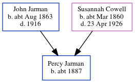

Percy Jarman c1887 -
[ Home ] | [ Calendar ] | [ Surnames Index ] | [ Census Index ] | [ Family History ]An advertising clerk and the child of John Jarman (a bookstall manager) and Susannah Cowell (a housemaid), Percy Jarman, the third cousin twice-removed on the mother's side of Nigel Horne, was born in Streatham, London, England c. 1887.
During his life, he was living at Hambro Road in Streatham on Apr 5, 18911; and at Penwortham Road, Wandsworth, London, England on Apr 2, 19112.
Parents
- John Isaac was born c. Aug 1863
- Susannah Elizabeth was born c. Mar 1860
Citations
- 1891 England, Wales & Scotland Census - Findmypast (was age 3 and the son of the head of the household)
- 1911 Census for England & Wales - Findmypast (was age 23 and the son of the head of the household)
Media
England & Wales births 1837-2006 - BMD/B/1887/3/AZ/000304/200
1911 Census for England & Wales - GBC/1911/RG14/02346/0323/4
Family Tree
Generated by ged2site. Last updated on Jun 11, 2024